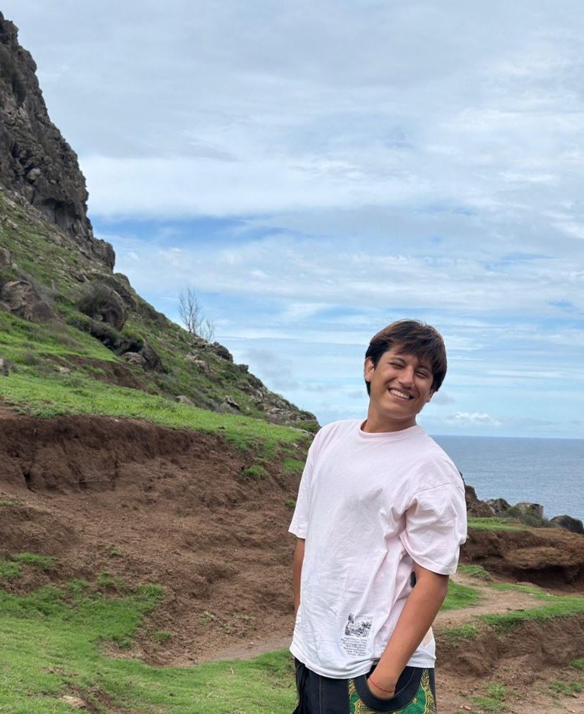
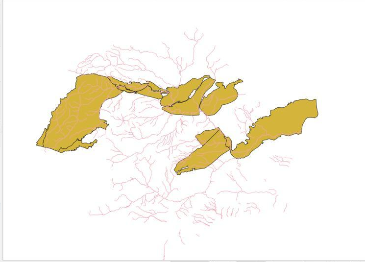
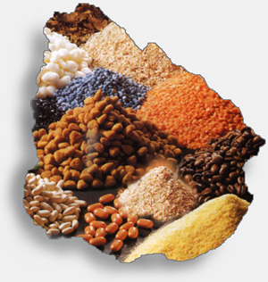
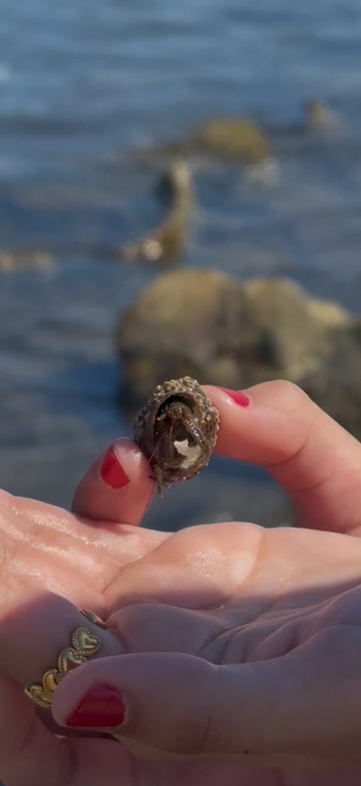

Climathon Murcia · 2025
Renaturalising the Río Segura
Multi-criteria suitability analysis for river renaturalisation zones.
Developing an interdisciplinary approach to environmental research through geospatial methods, spatial data, geographic analysis, and scientific visualization.
Explore my work →
A growing collection of maps, spatial visualisations, and geographic analyses developed through GIS and environmental research.
Multi-criteria suitability analysis for river renaturalisation zones.

Multi-layer suitability analysis to identify viable sites for a new recreational facility.

A friction surface combining slope and land use to trace the lowest-cost corridor.

Weighted multi-criteria model translating terrain, settlement access and land use into a suitability index.

Forest-patch identification, area filtering and terrain-based connectivity analysis.

Database queries and spatial relationships analysed with QGIS DB Manager.

R-based exploration of slope distributions across land-use categories.
Additional cartographic projects and spatial analyses will be added as the portfolio develops.

An interdisciplinary research project examining food sovereignty through Ecuadorian geography, Indigenous food systems, land relations, environmental change, and grassroots organizing.
Explore project →
A controlled marine ecology experiment examining behavioral responses of Pagurus samuelis across nominal microplastic exposure levels, combining observation, statistical analysis, and scientific visualization.
Explore project →
A collaborative ecological research project examining changes in beetle assemblages over a ten-year period at the Robert J. Bernard Field Station in Southern California, involving field and laboratory work, specimen processing, taxonomic identification, data management, and ecological research support.
Explore project →Academic and collaborative research connecting environmental questions, ecological field methods, experimental approaches, data management, quantitative analysis, and interdisciplinary approaches to understanding ecological and human–environment systems.
My research experience includes hands-on ecological
field and laboratory work, specimen processing,
taxonomic identification, data management, and
scientific communication.
I contributed to a long-term study examining changes
in beetle assemblages over a ten-year period at the
Robert J. Bernard Field Station in Southern California.
My work included specimen processing, inventory,
family-level identification based on morphological
characteristics, ecological data organization,
and additional project support.
Species-level identification and the final community
analysis were completed by other members of the
research team, allowing my contribution to be
presented accurately within the broader collaborative
research process.
I am an undergraduate researcher interested
in geospatial science, GIS, environmental research,
and the role of spatial data in understanding
complex environmental systems.
My academic interests sit at the intersection
of geography, environmental science, spatial
analysis, and visual communication. I am particularly
interested in transforming environmental data into
clear maps, quantitative analyses, and research
narratives that make complex questions easier
to understand.
Geospatial Science
Geographic Information Systems
Spatial Analysis
Environmental Research
Data Science
Cartographic Communication
Human–Environment Relationships
Ecological Field Research